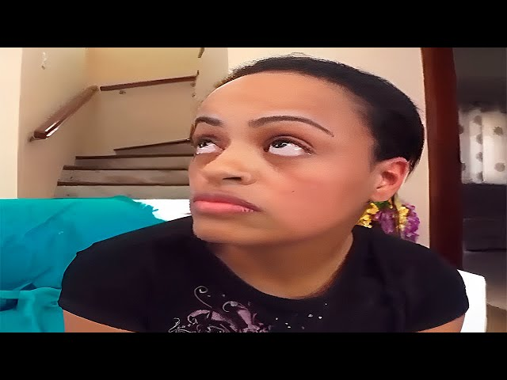

üåü NewMFX e a cultura dos memes üåü
Explore o universo memeístico
Início
Estrelas
Memes
TikTok
Nome verdadeiro: Bruna Hipólito
Data de nascimento: 17 de junho de 1996
Origem: Brasil
Grupo: Chocogirls (NewMFX Records)
Estilo: K-pop, com influências de humor e memes
üé¨Como tudo come√ßou
Saori Kido ganhou notoriedade em 2021 com o vídeo viral "Special Christmas Dinner", onde aparece dizendo: "Chocotonyr... Vou comer mesmo, tô nem aí".
Essa frase se espalhou rapidamente nas redes sociais, especialmente no FlopTok, tornando-se um dos memes mais comentados da época.
Após esse sucesso, Saori se reinventou artisticamente, deixando para trás sua trajetória anterior e focando em sua carreira musical.
Ela se tornou uma das principais artistas da NewMFX, lançando músicas que mesclam humor, estilo e uma estética única.
üé§ Carreira musical
Atualmente, Saori Kido é a principal artista do grupo Chocogirls, sob a NewMFX Records.
Ela tem se destacado por suas performances energéticas e por sua presença de palco marcante. Entre seus lançamentos mais recentes, destacam-se:
"S,XOXO" (lançamento: 26 de janeiro de 2024): Um mini-álbum que promete ser um dos trabalhos mais aguardados de sua carreira.
"Born Kido (Deluxe)" (lançamento: 26 de outubro de 2024): Uma versão expandida de seu álbum anterior, com 6 novas faixas.
"The NewMfx Festival: Finale 'I've SCAT'" (lançamento: 28 de março de 2025): Um evento especial que marcou o retorno das Chocogirls aos palcos.
üé∂ Destaque musical
Uma das faixas que exemplifica bem o estilo de Saori é "Welcome To NewMfx (Live)", disponível no SoundCloud.
A música mistura elementos de K-pop com influências de humor e memes, refletindo a personalidade única da artista.

Nome verdadeiro: Grazy
Origem: Brasil
Grupo: Chocogirls (NewMFX Records)
Estilo: K-pop, com influências de humor e memes
üé¨ Como tudo come√ßou
Vaninha é uma das personagens mais controversas e polêmicas do universo NewMFX.
Sua trajetória começou como escrava de Lola Mello, passando por diversas humilhações e castigos.
Eventualmente, foi vendida para Nicole, onde continuou a ser submissa e a sofrer abusos.
Sua história é marcada por episódios de sofrimento extremo e situações degradantes, que geraram discussões e críticas dentro da comunidade.
üé≠ Apari√ß√µes e impacto
Vaninha apareceu em diversos episódios da série, totalizando 43 episódios, conforme informações disponíveis na Internet Adult Film Database.
Ela é considerada uma das personagens mais sofridas da série, com muitos fãs acreditando que ela sofreu mais do que a protagonista Saori Kido em toda a série.
üåü Sobre as Estrelas do NewMFX
No universo do NewMFX, algumas artistas se destacaram e conquistaram seu espaço na cultura de memes da internet.
Entre elas, conseguimos encontrar informações relevantes sobre Saori Kido e Vaninha, que são as mais conhecidas e cujas histórias já circulam em vídeos,
redes sociais e conteúdos relacionados ao estúdio.
Infelizmente, as outras atrizes do NewMFX não possuem registros públicos ou informações detalhadas disponíveis,
o que dificulta apresentar suas trajetórias de forma confiável. Mesmo assim, elas continuam fazendo parte do universo do estúdio
e contribuindo para o legado dos memes e conteúdos que marcaram a internet brasileira.
Criado por Patrick Santos da Silva
© 2025 - Este site possui caráter exclusivamente humorístico, sem intenção de ofender ou denegrir qualquer pessoa ou instituição.